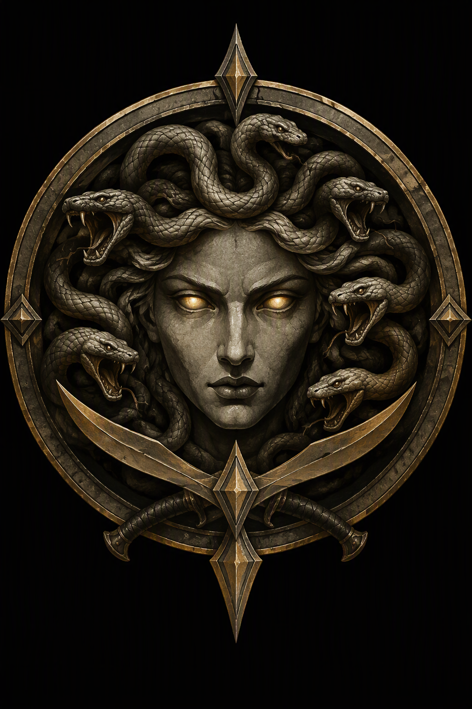
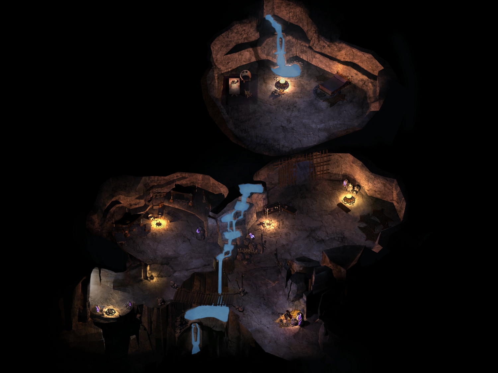

Oko Gorgony.


Ukryte przejście 29 prowadziło do rozległych podziemi, które niegdyś mogły służyć jako miejskie magazyny. W środku kręciło się mnóstwo ludzi, ale wystarczyło kilka spojrzeń, aby zrozumieć, że nieproszona drużyna nie wzbudza ich zachwytu. Mimo nieufności wszyscy wskazywali drogę w głąb kompleksu, jak gdyby ktoś ważny już na nich czekał.
Po przejściu przez kładkę i drewnianą bramę kompania dotarła do obszernego pomieszczenia. Przy ognisku siedział mężczyzna, który od chwili ich wejścia obserwował każdy ruch. Był to Baldwin „Rzeźnik” Glendale, przywódca Oka Gorgony.
Gospodarz podziemi nie krył zdziwienia śmiałością intruzów, ale szybko dowiódł, że doskonale wie, z kim ma do czynienia. Znał imię Leecha, wiedział o nagrodzie wyznaczonej za jego głowę i przyznał, że bez trudu mógłby wydać go łowcom nagród. Umiejętności wychowanka Goriona uznał jednak za znacznie cenniejsze niż oferowane za niego złoto. Baldwin przedstawił Oko Gorgony jako organizację opartą na sekretach, wpływach i zaufaniu, na które każdy członek musiał sobie zasłużyć. Choć siedziba gildii przypominała bardziej zapomniany magazyn niż pałac przestępczego władcy, jej sieć miała oplatać całe południowe dzielnice Beregostu. Rzeźnik zaproponował młodemu dowódcy dołączenie do organizacji, obiecując dostęp do wiedzy, bogactwa i możliwości niedostępnych zwykłym najemnikom.
Zaintrygowana Sandrah zapytała, jak gildia radzi sobie pomiędzy wpływami Ravenscara na północy a obecnością Złodziei Cienia w Amnie. Przywódca odpowiedział, że potęga obu organizacji ma swoje granice, natomiast w Beregostcie to jego ludzie rozdają karty. Oko Gorgony dostrzegało słabości rywali, wykorzystywało przeoczone okazje i cierpliwie czekało na właściwy moment. Nie zamierzało być pionkiem w cudzej rozgrywce, lecz siłą zdolną zmieniać jej reguły. Kapłanka Mystry zainteresowała się także działalnością Straży Miejskiej. Rzeźnik zapewnił, że jej patrole są przewidywalne i łatwe do ominięcia. Funkcjonariusze mogli wierzyć, że odzyskują kontrolę nad miastem, podczas gdy gildia działała w miejscach, których nie potrafili nawet dostrzec. Im mocniej prawo zaciskało pięść, tym sprawniej złodzieje prześlizgiwali się pomiędzy jego palcami.
Neera odniosła się do tych zapewnień sceptycznie. Przypomniała, że nie każda tajemnica zasługuje na odkrycie, a magia ukryta w ciemności często pozostaje tam z dobrego powodu. Baldwin nie zaprzeczył. Przyznał, że gildia korzysta również z mroczniejszych sztuk, a jej szeregi nie są przeznaczone dla ludzi o słabych nerwach. W zamian oferowała udział w poszukiwaniu zapomnianych artefaktów, badaniu dawnych tajemnic oraz rozszerzaniu wpływów na całym Wybrzeżu Mieczy.
Imoen nie ukrywała zainteresowania prawdziwym złodziejskim fachem, choć wiedziała, że propozycja oznacza coś znacznie poważniejszego niż otwarcie kilku zamków dla zabawy. Mimo ostrzeżeń towarzyszy Leech postanowił zaryzykować. Poznanie gildii od środka mogło przynieść bezcenną wiedzę, nawet jeśli oznaczało wejście do świata, w którym przyjaźń, lojalność i zdrada często nosiły tę samą maskę.
Baldwin przyjął młodego gnoma w szeregi Oka Gorgony i przekazał go pod opiekę Rigallda. Pierwsze próby miały ocenić spryt, zręczność oraz umiejętność działania bez zwracania na siebie uwagi. Dopiero ich ukończenie pozwoliłoby adeptowi zostać pełnoprawnym członkiem organizacji.
Jeszcze niedawno Leech ścigał szczury w spichlerzu Candlekeep, a teraz właśnie wstępował do gildii złodziei działającej pod ulicami Beregostu. Pozostawało mieć nadzieję, że nauczy się poruszać w cieniu, zanim ktoś wykorzysta jego własny cień przeciwko niemu.
Reputacja -2
U boku przywódcy stali Saradin i Danika. Pierwszy początkowo nie miał nic do powiedzenia, natomiast jego towarzyszka okazała się wyświęconą demarchinią Maski, przydzieloną gildii jako doradczyni i przewodniczka duchowa. Danika wyjaśniła, że jej zadaniem jest nadanie działalności organizacji religijnego celu. Każda kradzież, zdobyty sekret i udana intryga mogły stanowić hołd dla Pana Cieni. Wierzyła, że pod spojrzeniem Maski złodziejski fach może zostać wyniesiony do rangi prawdziwej sztuki. Zainteresowana obecnością kapłanki Sandrah wypytała ją o historię i zasady wiary. Kościół Maski od wieków zapewniał schronienie złodziejom, oszustom i ludziom działającym w cieniu. Jego wyznawcy cenili spryt, skrytość i zaradność, a własność postrzegali jako pojęcie równie płynne jak zawartość cudzej sakiewki. Działalność Kościoła obejmowała szpiegostwo, infiltrację, kradzieże i subtelne wywieranie wpływu. Każdy zdobyty sekret oraz skradziony przedmiot mógł zostać ofiarowany Masce. Jego słudzy korzystali również z magii wspomagającej skrytość i oszustwo, między innymi zaklęć Mroczna Droga, Nasłuchiwanie Cieni oraz Uderzenie Cienia.
Danika mogła pomagać w planowaniu napadów, przewidywaniu ruchów przeciwników i wykrywaniu ukrytych zagrożeń. Oferowała także szkolenie w skradaniu, kamuflażu i cichym poruszaniu się. Jej wkład był mniej widowiskowy niż klinga czy kula ognia, lecz w świecie sekretów właściwa informacja potrafiła być najgroźniejszą bronią. Duchowna pochodziła z Thay, gdzie szkolono ją w szpiegostwie, strategii oraz rytuałach Maski. Później otrzymała rozkaz udania się do Beregostu i wprowadzenia wpływów swojego boga do Oka Gorgony.
Dla służki Mystry rozmowa z wyznawczynią Pana Cieni była okazją do poznania odmiennego spojrzenia na magię, władzę i moralność. Leech natomiast zaczynał rozumieć, że członkostwo w gildii oznacza znacznie więcej niż naukę cichego chodzenia. Pod ulicami miasta kryła się cała wiara zbudowana z sekretów, masek i cudzych sakiewek.
Cofając się ku wejściu i poszukując Rigallda, drużyna poznała pozostałych mieszkańców podziemi. Gilbald przyjmował zakłady, natomiast Meridia zarządzała miejscowym domem uciech wraz z Dariusem, Ileną, Mirią i Rafaelą.
W głębi kompleksu urządzono areny prowadzone przez Diomedesa i jego kotkę Shadow. Wojownik wyjaśnił, że doły nie służą walkom na śmierć i życie, lecz treningowi, sprawdzaniu umiejętności oraz zapewnianiu widzom rozrywki. Gildia zarabiała na zakładach, a kandydaci mogli dowieść swojej wartości. Znacznie więcej uwagi niż arena wzbudziła sama Shadow. Diomedes odnalazł ją ciężko ranną w jednym z zaułków Beregostu i przywrócił do zdrowia. Od tamtej pory kotka nie odstępowała go na krok, a podobno potrafiła wyczuć zagrożenie wcześniej niż niejeden wojownik. Historia natychmiast rozczuliła Imoen i Neerę, które zaczęły rywalizować o tytuł największej znawczyni kociej natury. Opiekun aren przerwał ich spór, oznajmiając, że Shadow lubi wszystkich ludzi o dobrym sercu. Leech uznał, że w gildii pełnej złodziei i skrytobójców właśnie kotka może być najbardziej godną zaufania mieszkanką.
Gdy Sandrah zapytała o możliwość walki na arenie, Diomedes zalecił cierpliwość. Najpierw należało poznać zasady oraz zawodników, a dopiero potem rzucać się w wir starcia (THE PITS). Wśród walczących na arenach znajdowali się Roran „Żelazna Pięść” Zlenka, Grom Torrek, Serra Swiftwind, Lyria Winterheart i Khalid Blackrock.
Rigalldo oczekiwał nas w pieczarze przy wejściu. Doświadczony intrygant miał ocenić spryt i zaradność nowego rekruta. Ostrzegł, że próby mogą zaprowadzić go bliżej serca gildii albo znacznie głębiej w stronęciemności. Uwagę Sandrah zwróciły stroje Rigallda i Baldwina, przypominające wizerunki Złodziei Cienia. Mistrz intryg przyznał, że obaj rzeczywiście należeli niegdyś do tej organizacji, lecz obecnie całą lojalność oddali Oku Gorgony.
Opowiedział też o najważniejszych członkach gildii. Ariosh miał oczy i uszy w całym mieście, a Rhade pełnił funkcję kowala oraz pasera. Liedel zajmowała się prywatnymi kontraktami i listami gończymi, natomiast Zeda była skrytobójczynią, kapłanką i uzdrowicielką. Nad wszystkimi stał Baldwin, człowiek, który zdołał wykuć organizację niemal z nicości.
Pierwsza próba dotyczyła pasera imieniem Zieke, posiadającego diament pochodzący z Waterdeep. Mężczyzna zamierzał sprzedać klejnot podczas jarmarku na południu, dlatego należało ukraść go przed jego wyjazdem. Zieke zatrzymał się w gospodzie Feldeposta i otoczył lojalnymi strażnikami. Zadanie trzeba było wykonać bez rozlewu krwi. Szansę dawała skrajna paranoja pasera: nie ufał nawet własnej ochronie i pozostawał sam w pokoju. Należało przeniknąć do zajazdu, ominąć strażników, zabrać diament i zniknąć, pozostawiając po sobie jedynie zamknięte drzwi oraz właściciela podejrzewającego cały świat poza właściwym złodziejem (DIAMOND IN THE ROUGH). Na piętrze gospody Feldeposta 14 Imoen odnalazła Ziekego. Wykorzystując miksturę niewidzialności i coraz większą wprawę w złodziejskim fachu, zręcznie wykradła kamień. Drużyna wróciła do Rigallda 29, który przyznał, że dyskretnie obserwował przebieg misji. Chciał mieć pewność, że adepci nie pomylą subtelnej kradzieży z regularnym oblężeniem zajazdu. Mistrz intryg pochwalił odwagę grupy, choć zauważył, że podczas zadania powstało nieco zamieszania. Przypomniał, że prawdziwy złodziej powinien pozostawiać po sobie jak najmniej pytań. Pierwsza próba została jednak zaliczona (DIAMOND IN THE ROUGH).
Kolejne zadanie wymagało nie tylko zręcznych palców, lecz także przekonującego języka (THE PRICE OF PROTECTION). Celem był Gerard Travenhurst, bogaty mieszkaniec Beregostu, który przestał płacić Oku Gorgony za ochronę, uznając własnych strażników za wystarczające zabezpieczenie. W górnych komnatach jego rezydencji znajdował się sejf zawierający rodowy naszyjnik. Drużyna miała ukraść klejnot, a następnie wykorzystać go jako argument podczas rozmowy z właścicielem. Jeśli szlachcic zachowa rozsądek, powinien wznowić wpłaty. Jeśli nie, gildia dopuszczała bardziej zdecydowane środki.
W drodze do posiadłości Travenhursta drużyna spotkała zaniepokojonego rolnika 30. Najpierw wspomniał o skarbach ukrytych w ruinach Mostu Firewine, lecz jego prawdziwy problem dotyczył gospodarstwa. W ciągu miesiąca zniknęło trzech parobków, a nocami za domem poruszało się tajemnicze stworzenie. Rolnik utrzymywał nieustannie płonący stos, licząc, że ogień odstraszy napastnika. Zaprosił drużynę do domu obok zajazdu Feldeposta, gdzie obiecał przedstawić szczegóły (A WORRIED FARMER).
W willi Gerarda Travenhursta 31 drogę zastąpili dwaj ochroniarze Carl i Jurgen. Na piętrze drużyna natknęła się również na złodzieja należącego do gangu Blackthorna, który zdążył ukraść poszukiwany naszyjnik. Nie zamierzał oddać go dobrowolnie, więc klejnot odebrano siłą. Leech próbował wyjaśnić Gerardowi, że tylko dzięki interwencji gildii rodzinna pamiątka została odzyskana. Szlachcic odpowiedział, nasyłając na przybyszów ochroniarzy. Dopiero ich śmierć skłoniła go do wznowienia płatności (THE PRICE OF PROTECTION).
Reputacja -1
Rolnik w swoim domu 32 potwierdził, że stworzenie pojawia się po zmroku za zabudowaniami. Należało wrócić nocą i sprawdzić, co poluje na pracowników gospodarstwa (A WORRIED FARMER).
Wróciwszy do Rigallda 29 drużyna przekazała mu naszyjnik i poinformowała o wznowieniu wpływów od zbyt śmiałego Gerarda Travenhursta. W rezydencji pojawiła się wprawdzie komplikacja związana z gangiem Blackthorna, lecz nauczyciel zlekceważył konkurentów jako grupę nieistotnych wyrzutków. Próba została zaliczona, a Leech oficjalnie stał się pełnoprawnym członkiem Oka Gorgony. Nie było uroczystej ceremonii, fanfar ani przemówień, jedynie krótkie potwierdzenie, że od tej chwili zaufanie gildii wiąże się zarówno z przywilejami, jak i obowiązkami (THE PRICE OF PROTECTION).
Rigalldo polecił odbierać uliczne zlecenia od Ariosha, a kontrakty łowieckie od Liedel. Na nowego członka oczekiwał również Baldwin, którego wezwania lepiej było nie ignorować.
Ariosh, oczy i uszy gildii na ulicach Beregostu, powierzył nowemu członkowi pierwsze zlecenie. Para bogatych szlachciców zmierzających na jarmark w Nashkel miała urządzić ucztę niedaleko Wesołego Żonglera. Drużyna powinna poznać zwyczaje ochrony i ukraść obie sakiewki bez wszczynania walki (SHADOWS OF REVELRY).
Liedel, strażniczka sekretów i łowczyni nagród, przedstawiła trzy dostępne kontrakty. Pierwszy dotyczył Cartha, który pożyczył pieniądze od Zhentarimów i nie spłacił długu. Ostatnio widziano go przy Drodze Wybrzeża (LIEDEL’S BOUNTY: CARTH).
Drugim celem był Vapula Simberg, dawny złodziej z Wrót Baldura, który zdradził swoich towarzyszy i doprowadził do ich aresztowania. Według ostatnich informacji odnalazł schronienie w jednej ze świątyń. Neera skwitowała jego przemianę pytaniem, czy kolejnym krokiem będzie wyniesienie łotra na ołtarze (LIEDEL’S BOUNTY: VAPULA SIMBERG).
Ostatnie zlecenie dotyczyło Aishy, pracownicy miejscowych domów uciech, ukrywającej się po konflikcie z jednym z klientów. Drużyna spotkała ją już wcześniej, więc pozostawało sprawdzić, czy teraz będzie bardziej rozmowna (LIEDEL’S BOUNTY: AISHA).
Baldwin powierzył natomiast Leechowi pierwszą poufną misję. Elitarna grupa gildii, zwana Wężowymi Głowami, poszukiwała fragmentów Kerykeionu, potężnej laski związanej z trzema Gorgonami. Najnowszy trop prowadził do mrocznej czarodziejki mieszkającej wysoko w Górach Gibberlingów, na południowy wschód od wejścia do kopalni Nashkel. Miała posiadać jeden z odłamków. Baldwin polecił w razie potrzeby porozmawiać z kronikarzem Saradinem (SORCERESS OF SHADOWS).
Saradin opowiedział najpierw historię przywódcy gildii i jego starszego brata Richarda. Obaj należeli kiedyś do Złodziei Cienia, lecz to Baldwin wykazywał większy talent do skradania, planowania i zdobywania wpływów. Zazdrosny Richard zaczął sprzedawać sekrety organizacji Zhentarimom. Kiedy zdrada wyszła na jaw, jego własny brat otrzymał rozkaz wykonania wyroku. Starcie zakończyło się śmiercią Richarda, a poważnie ranny Baldwin zerwał później więzi ze Złodziejami Cienia. Swoje ambicje skierował ku odbudowie Kerykeionu.
Według kronikarza laskę wykuto z udziałem demonicznych mocy w głębinach Podziemia. Została związana z trzema siostrami: nieśmiertelnymi Stheno i Euryale oraz ich śmiertelną przyrodnią siostrą Meduzą. Zazdrosna o nieśmiertelność krewnych Meduza miała uwięzić ich esencje w artefakcie, tworząc przeklęty Kerykeion. Laska potrafiła petryfikować ofiary, przyzywać roje węży oraz wzmacniać zdolności magiczne właściciela. Po Czasach Kłopotów artefakt trafił do Faerûnu, gdzie został rozbity. Jego fragmenty rozproszyły się po różnych zakątkach Wybrzeża Mieczy. Saradin zdradził również, że jest sługą Maski, przydzielonym do Oka Gorgony jako kronikarz, doradca i znawca ukrytych tajemnic. W jego oczach kradzież była nie tylko sposobem zdobywania bogactwa, lecz sztuką, której mistrz powinien poruszać się jak cień i pozostawiać po sobie jedynie pytania.
Przed opuszczeniem siedziby drużyna przyjęła kilka wyzwań na arenach Diomedesa. Leech stanął kolejno przeciwko Khalidowi Blackrockowi, Gromowi Torrekowi, Lyrii Winterheart, Serrze Swiftwind oraz Roranowi „Żelaznej Pięści” Zlence. Po pokonaniu wszystkich przeciwników Diomedes wyjaśnił, że do zdobycia tytułu czempiona pozostało jeszcze zwycięstwo nad Islą. Niestety, zawodniczka zaginęła. Jeśli drużyna odnajdzie ją podczas dalszych podróży, opiekun aren będzie oczekiwał ich powrotu (THE PITS).
Następnie poznali Zedę, uzdrowicielkę i dawną członkinię Nocnych Masek z Westgate. Miasto opisała jako handlową potęgę pełną rywalizujących gildii, tajnych organizacji i zmiennych sojuszy. Do ważniejszych sił należeli Zhentarimowie, Dziewięć Złotych Mieczy oraz Gildia Najemników, lecz największy strach wzbudzały Nocne Maski. Według Zedy wyższe szeregi Nocnych Masek zajmowały wampiry kierujące organizacją z ukrycia. Ich wpływy rozciągały się na niemal każdy zakątek miasta. Zmęczona nieustanną walką o władzę uzdrowicielka opuściła Westgate i przyłączyła się do spokojniejszego Oka Gorgony w Beregostcie.
Zeda uwielbiała zagadki i zaproponowała grę. Za każdą poprawną odpowiedź oferowała nagrodę, lecz pomyłka kosztowałaby sto sztuk złota. Pierwsza zagadka dotyczyła zapałki, świecy i lampy oliwnej. Oczywiście najpierw należało zapalić zapałkę. W drugiej trzech mnichów twierdziło, że ma brata imieniem Destin, podczas gdy ten mówił, że nie ma ani jednego brata. Nikt nie kłamał, ponieważ mnisi mogli być jego siostrami. Odpowiedzią na trzecią zagadkę były dzień i noc: jeden „pęka”, lecz nie upada, druga „zapada”, ale się nie łamie. W czwartej chodziło o echo, którego nie można zobaczyć, lecz można usłyszeć dopiero po wypowiedzeniu własnych słów. Zadowolona Zeda uznała drużynę za interesujące towarzystwo i zapowiedziała kolejną grę, gdy zgromadzi nowy zestaw nagród.
Po opuszczeniu podziemi drużyna odwiedziła Aishę w Czerwonym Bukiecie 11. Kobieta wyjaśniła, że nagrodę za jej głowę wyznaczył Amrius, klient, który nie potrafił pogodzić się z odrzuceniem i publicznym upokorzeniem. Mężczyzna nadal przebywał w Płonącym Czarodzieju 12, więc należało spróbować skłonić go do wycofania zlecenia (LIEDEL’S BOUNTY: AISHA).
Amrius zgodził się cofnąć nagrodę za tysiąc sztuk złota. Przedstawił jednak zupełnie inną wersję wydarzeń. Według niego to Aisha, ogarnięta zazdrością po zobaczeniu go z inną kobietą, zaatakowała i wywołała awanturę. Drużyna wróciła do wynajętego pokoju Aishy 11 i skonfrontowała ją z relacją mężczyzny. Kobieta zareagowała gwałtowną tyradą na temat Ileny, ujawniając głęboko zakorzenioną zazdrość i rywalizację. Sprawa okazała się znacznie bardziej skomplikowana, niż początkowo sądzono. Aby poznać trzecią wersję wydarzeń, należało odszukać Ilenę w siedzibie Oka Gorgony 29. Informacje zawodowej towarzyszki mogły wyjaśnić, kto naprawdę rozpoczął awanturę (LIEDEL’S BOUNTY: AISHA).
Ilena, ponętna i wyjątkowo bezpośrednia pracownica domu uciech, przedstawiła własną wersję wydarzeń. Wyjaśniła, że Amrius wynajął ją, aby wzbudzić zazdrość Aishy. Prowokacja zadziałała aż nazbyt dobrze: rozwścieczona kobieta rzuciła się na niego, a całe zajście zakończyło się publicznym upokorzeniem. Ilena zgodziła się porozmawiać z mężczyzną i nakłonić go do ponownego przemyślenia sprawy. Skoro naprawdę pragnął odzyskać Aishę, wyznaczenie nagrody za jej głowę trudno było uznać za szczególnie udaną strategię zalotów. Drużyna postanowiła dać mu czas na przetrawienie tej oczywistości (LIEDEL’S BOUNTY: AISHA).
Podczas spaceru Imoen zaczęła marzyć, że po zakończeniu awanturniczego życia mogłaby wraz z Sandrah zamieszkać w jednym z okazałych domów Beregostu. Kapłanka przyznała, że jej ojciec posiada bogatą rezydencję w Waterdeep, lecz dla niej prawdziwy dom tworzyli ludzie, a nie marmurowe komnaty. "Siostrzyczka" Leecha natychmiast wzbogaciła wizję o kochających mężów, gromadkę dzieci i wspólne wieczory przy opowieściach o dawnych przygodach. Sandrah podchwyciła żart i uznała, że mają przed sobą nową misję: odnaleźć odpowiednio wspaniałych kandydatów na mężów. Imoen bez wahania ogłosiła, że nie będzie to żaden problem. W trakcie innej pogaduszki Sandrah wyjaśniła Finch, że jako kapłanka pragnie przede wszystkim pomagać ludziom i czynić świat nieco bardziej znośnym. Wiedzę ceniła nie dla niej samej, lecz ze względu na korzyści, jakie może przynieść innym. Przywołała przykład bogacza pozostawionego ze złotem na pustkowiu, gdzie nie mógł niczego kupić i mimo majątku skazany byłby na śmierć głodową. Finch z zainteresowaniem przyjęła jej spojrzenie i chętnie kontynuowałaby dyskusję, lecz Leech ponaglił drużynę do dalszej drogi. Obie uznały więc, że jeszcze kiedyś powrócą do tej rozmowy.
Po zmroku nadszedł czas na zadania wymagające osłony nocy. Za domem rolnika 33 drużyna rzeczywiście odnalazła potwora, którym okazał się ghul. Po pozbyciu się bestii przekazali gospodarzowi 32 dobrą wiadomość. Wdzięczny farmer podziękował im za pomoc udzieloną i braku żądania zapłaty (A WORRIED FARMER).
Reputacja +1
Bestiariusz: Ghul
Tego samego wieczoru przy Wesołym Żonglerze rozpoczęła się uczta szlachciców 34. Drużyna przekonała karczmarza Boberta, aby dolał do piwa nieco mocniejszego trunku. Wkrótce strażnicy zaczęli zwracać większą uwagę na towarzystwo postronnych osób niż na mieszki swoich pracodawców. Leech przekonał jedną z kurtyzan, aby odciągnęła strażnika, otwierając krótkie okno możliwości. Jen’lig, która najwyraźniej równie sprawnie posługiwała się palcami jak mieczem, wykradła sakiewkę lordowi Thalricowi. Następnie drużyna sprowokowała bójkę z jednym z pijanych gości. Strażnik zakończył imprezę, a lady Elara w całym zamieszaniu upuściła wartościowy mieszek. Obie sakiewki trafiły w ręce ludzi Oka Gorgony.
W siedzibie gildii 29 Ariosh z zadowoleniem przyjął zdobycz (SHADOWS OF REVELRY) i natychmiast przedstawił kolejne zlecenie. Banda niezależnych łotrów zaczęła działać na terytorium Oka Gorgony, dlatego należało zwabić jej członków do północnych ogrodów i trwale zniechęcić do dalszych kradzieży (SHADOWS OF REVELRY).
Drużyna udała się do niewielkiego ogrodu na tyłach budynków 36, gdzie zastała Blackthorna i dwóch jego ludzi. Zamiast rozpoczynać walkę Leech przekonał przywódcę bandy do dołączenia do gildii. Sprawę rozwiązano bez rozlewu krwi, co przy rosnącej liczbie ostrzy w kompanii zaczynało uchodzić za prawdziwy wyczyn.
Po otrzymaniu raportu (SHADOWS OF REVELRY) Ariosh przydzielił kolejne zadanie. Należało odzyskać trzy przesyłki ze skrytek rozmieszczonych w mieście: skrzynię przy południowej fontannie 37, beczkę pod północnymi ogrodami 38 oraz worek obok kuźni 39. Wszystko trzeba było zrobić nocą, unikając patroli Straży Miejskiej (MOONLIT RETRIEVAL). Zadanie nie okazało się szczególnie trudne. Drużyna ominęła strażników, zebrała sakwy z wymienionych miejsc i zwróciła je informatorowi.
Następne zlecenie dotyczyło zdrajcy działającego wewnątrz organizacji. W biały dzień należało podrzucić sfałszowaną wiadomość do beczki za Płonącym Czarodziejem, a następnie po zmroku oczekiwać przy południowych fontannach. Ariosh zaznaczył, że nie chce półśrodków. Kiedy zdrajca się ujawni, należy ostatecznie się z nim rozprawić (SHADOWS AND ECHOES).
Noc wciąż trwała, dlatego drużyna postanowiła wykorzystać ciemność i odwiedzić wspominaną przez mieszkańców świątynię. Oprócz zwykłej ciekawości miała tam do załatwienia pewną sprawę dla Liedel.
